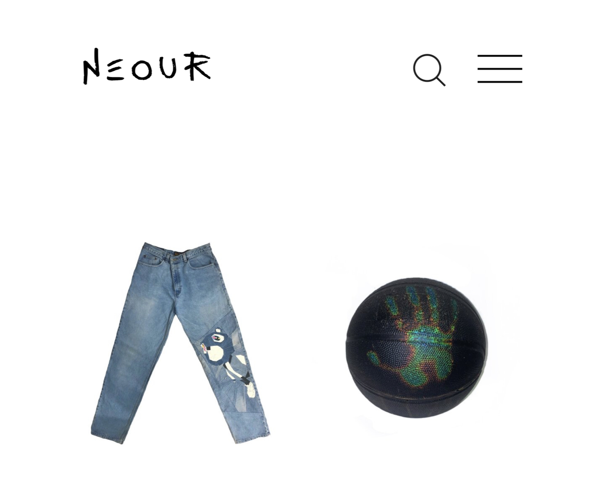
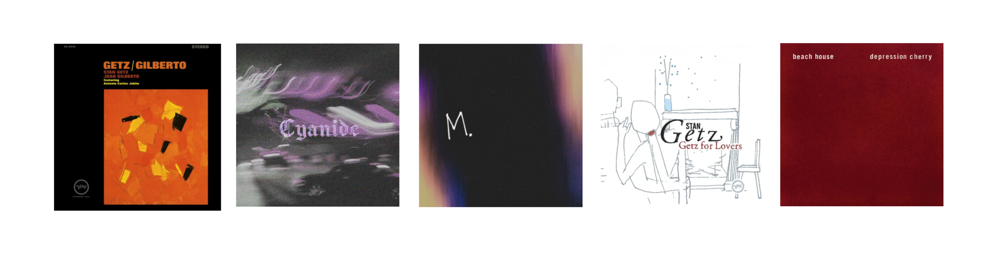

About Me
My journey with software engingeering began when I discovered its potential to develop skills that expands ones understanding of problem solving. With software engineering, we can all achieve what is believed impossible with the right tools and inconspicuous techniques. I believe that the challenges we come across in life can be understood as the doors that unlock the greatest wisdom and rewards imaginable. I look forward to conquering challenges with othes in the software engineering community.
Outside of software engineering:
neour.net

NEOUR is a brand focused on experimenting with new techniques in art & design. NEOUR encourages creatives to think outsIde the box, hoping to inspire others to ditch mainstream ideas and pursue their more taboo and avant-garde counterparts.
Top 5 Songs

- The Girl from Ipanema - Stan Getz
- Cyanide - Dxrk
- M. - Anil Emre Daldal
- Para Machuchar Meu Coracao - Stan Getz
- Space Song - Beach House
Portfolio
In Progress...